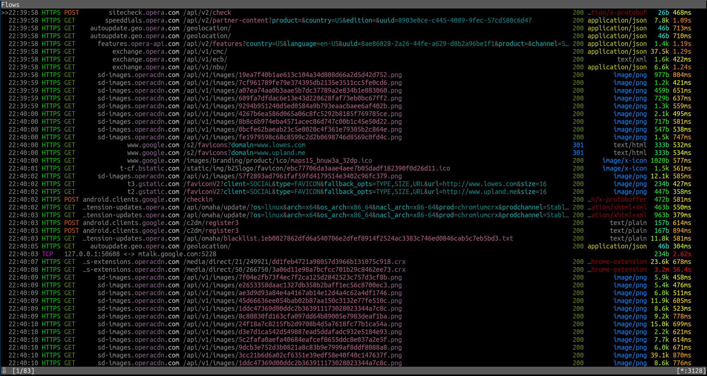
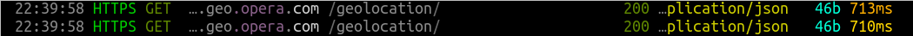
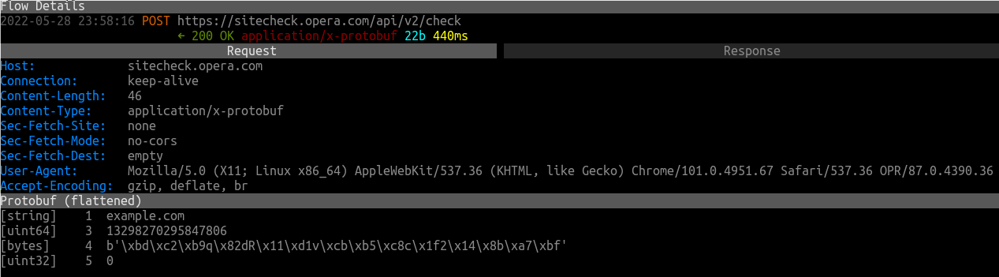
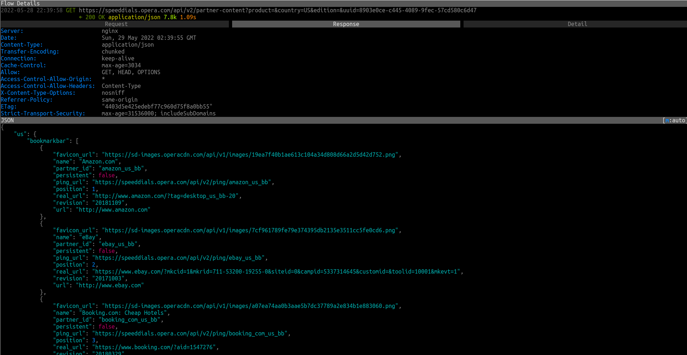

Opera
Um navegador Web feito pela Opera Software, usando o motor gráfico Blink. Tem alguns recursos interessantes como gestos de mouse, um bloqueador de anúncios embutido e VPN. É o sexto navegador mais popular. Mas como é em termos de privacidade?
Versão testada: 87.0.4390.36
Nível de Spyware: EXTREMAMENTE ALTO
O Opera faz cerca de 83 requisições não solicitadas em sua primeira execução:
Por padrão, ele espiona toda a sua navegação. Trabalha com anunciantes e rastreadores. Está integrado ao Facebook/Meta, um dos maiores violadores de privacidade do mundo. Tem o Google como mecanismo de pesquisa padrão. Possui código fechado.
Geolocalização
O Opera faz requisições de geolocalização:
Proteção contra Malware / Phishing
Sempre que você visitar um site, o Opera fará uma requisição como essa para verificar se é malicioso. Portanto, está literalmente espionando todo o seu histórico de navegação:
Isso pode ser desativado nas configurações ("Privacidade & Segurança" → "Privacidade" → "Me proteja de sites maliciosos").
Integração com Facebook, Instagram e WhatsApp
O Opera tem um botão Facebook Messenger, WhatsApp e Instagram na barra lateral e Facebook/Meta (dono do WhasApp e Instagram) e é uma das organizações mais contra a privacidade do mercado.
"Parceiros" do Opera
O Opera tem uma lista de "parceiros" - esses são os sites que estão no Speed Dial por padrão.
Se você clicar em um deles a partir daí, eles saberão que você visitou a partir do Speed Dial do Opera. Essas requisições também incluem IDs únicos de usuários.
Opera tem seu código fechado
E vai continuar desse jeito. De acordo com seu FAQ (a mensagem costumava estar lá em 2017 eles devem ter excluído em algum momento em 2018):
O Opera não liberou o código de seu navegador oficialmente. No entanto, vazamentos do antigo motor gráfico de web Presto que o Opera costumava usar apareceram na internet.
Mesmo com isso, no entanto, ainda pode haver outro spyware escondido.
Créditos
Este artigo foi originalmente escrito por digdeeper.neocities.org, mas foi editado a partir de sua fonte original.
Esse artigo foi criado em 25/11/2017
Esse artigo foi editado pela última vez em 29/05/2022
Esta é uma tradução do artigo em Inglês. Pode estar desatualizado. Compare as datas em ambos os artigos.
Se você quiser editar este artigo, ou contribuir com seu(s) próprio(s) artigo(s), visite-nos no repositório git no Codeberg.
Todas as contribuições devem ser licenciadas sob a licença CC0 para serem aceitas.